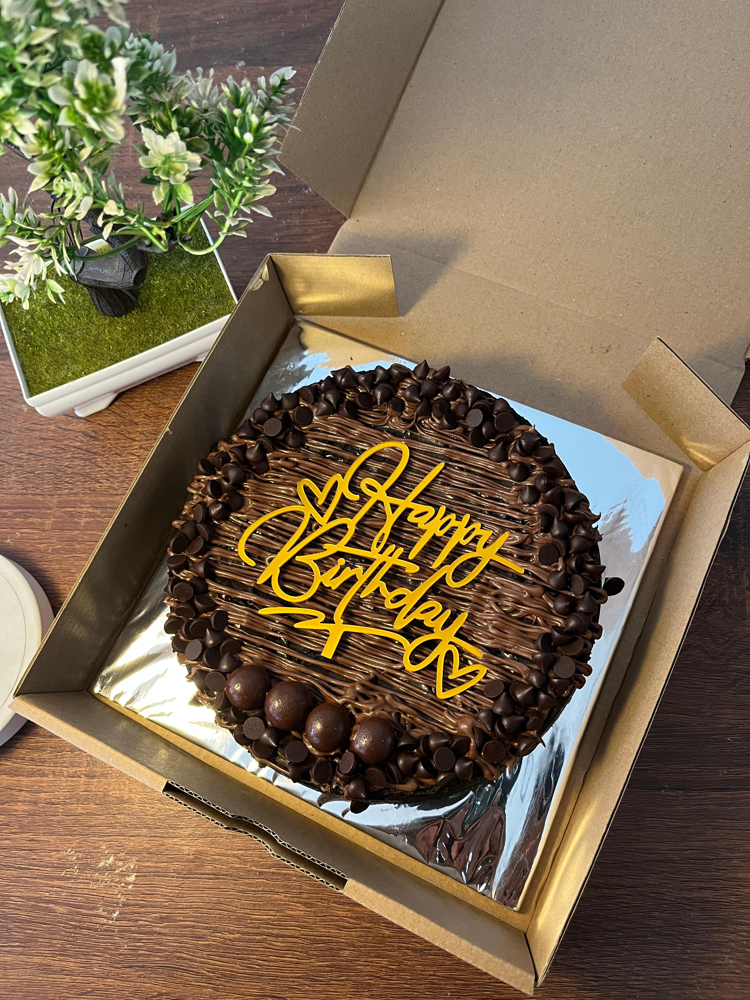

Brownies bisa menjadi alternatif kue ulang tahun yang praktis, mudah dibagikan, dan tetap terlihat istimewa. Bentuknya juga memberi ruang luas untuk dekorasi personal.
Cara Membuatnya Lebih Berkesan
- Pilih topping favorit penerima. Cokelat, strawberry, biskuit, atau kombinasi semuanya dapat mencerminkan selera mereka.
- Tambahkan tulisan singkat. Nama, usia, atau ucapan sederhana membuat hadiah terasa lebih personal.
- Sesuaikan ukuran dengan acara. Box kecil cocok untuk hadiah pribadi, sedangkan ukuran besar lebih mudah dibagikan.
- Tentukan waktu pengiriman. Produk fresh sebaiknya tiba mendekati waktu perayaan.
Sampaikan tema warna, nama penerima, dan jumlah tamu saat memesan agar dekorasi
serta ukuran dapat disesuaikan.
Tidak Hanya untuk Ulang Tahun
Konsep custom yang sama juga cocok untuk anniversary, wisuda, sempro, dan ucapan selamat lainnya. Satu box brownies dapat menjadi pusat perayaan sekaligus suguhan.
Siapkan brownies ulang tahun personal.
Kirim detail acara melalui WhatsApp.
Konsultasi Pesanan
Kirim detail acara melalui WhatsApp.